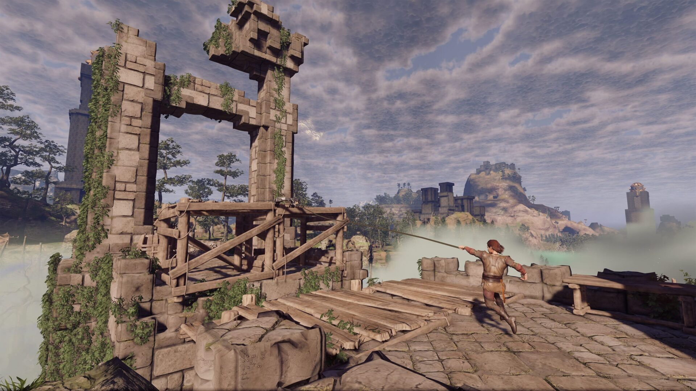

Enshrouded
Hours Played: 100
Rating: ★★★★☆ (4/5)

What is this game?
Enshrouded is an open world, exploration sandbox game. It offers gear progression, a well thought out skill tree and a great base building system.


Pros
+ Engaging gameplay
+ Great visuals
+ Fun multiplayer
+ Skill Tree
+ Base Building
Cons
- Can feel Repetitive
- Some annoying mechanics
- Sometimes directionless
Overall Thoughts
Overall, I would definetly recommend this game to anyone who enjoys open world survival games. It has all the greeat features like unlocking better recipies, a very in-depth skill tree, different combat styles without a tedious hunger and thirst system. Mulitiplayer runs smoothly and is even promoted though different builds, for example and tank and healer class. Enshrouded costs around £25 but will probably increase as version 1.0 releases so I would say to get it now to avoid paying more in the future.
← Back